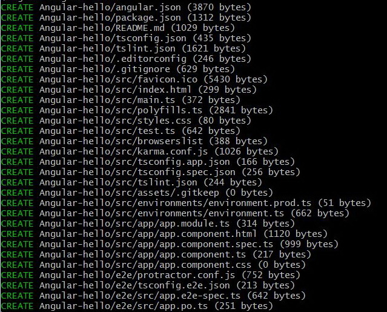

Angular

Angular is a framework
for building client applications
in HTML, CSS,
and JavaScript/Typescript
History
Benefits
of using
Angular
- Gives our applications a clean structure
- Includes a lot of re-usable code
- Makes our applications more testable
Angular CLI
Command-Line Interface
$ npm install -g @angular/cli
New project
$ ng new Angular-hello


Structure of Angular project
Main file (main.ts)
import { enableProdMode } from '@angular/core';
import { platformBrowserDynamic } from '@angular/platform-browser-dynamic';
import { AppModule } from './app/app.module';
import { environment } from './environments/environment';
if (environment.production) {
enableProdMode();
}
platformBrowserDynamic().bootstrapModule(AppModule)
.catch(err => console.error(err));
Angular CLI
and webpack
- Combines all scripts and stylesheets in a
bundles
- Automatically recompile application and
refreshes
bundles
- Refreshes browser
(HMR: hot module
replacement)
- Switch to native webpack (command: $ ng
eject)